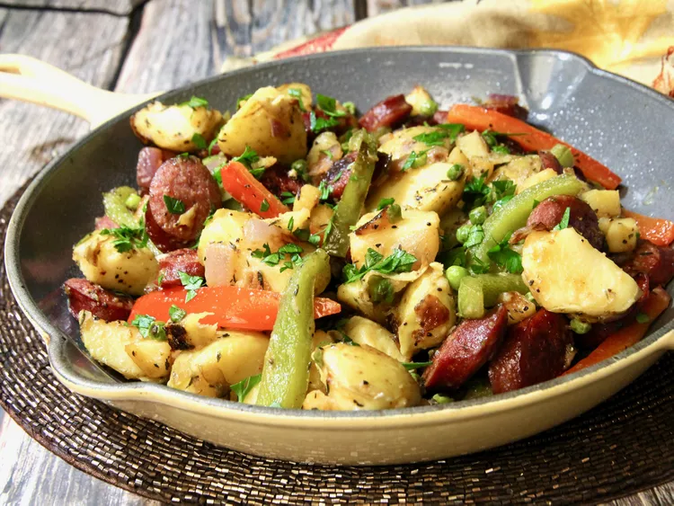

Skillet Sausage and Potatoes

Description
We're always looking for quick and easy dinners with easy cleanup, and this one-skillet sausage with peppers and potatoes will not disappoint you. It's budget friendly, tasty, and perfect for busy weeknights. It's also versatile, equally good served for dinner or breakfast, maybe even with a fried egg on top.
Ingredients
- 1 pound small gold potatoes (such as Potato Inspirations® Honey Gold® potatoes)
- 1 tablespoon olive oil, or as needed
- 1 (12-ounce) package fully-cooked smoked beef sausage, sliced 1/2-inch thick
- 1 red bell pepper, sliced vertically
- 1 green bell pepper, sliced vertically
- 1 red onion, cut into 1/2-inch chunks
- 1 golden delicious apple - peeled, cored, and cut into 1/2-inch cubes
- 1 clove garlic, minced
- 1/2 cup frozen petite peas
- 1 teaspoon dried thyme
- salt and freshly ground black pepper to taste
- 1 tablespoon chopped fresh parsley (optional)
Steps
-
Place potatoes in a large pot and cover with salted water; bring to a boil. Reduce heat to medium-low and simmer until fork tender, 10-12 minutes; drain.
-
Heat olive oil in a large skillet over medium heat; cook and stir smoked sausage in skillet until browned on both sides, about 3 minutes. Remove sausage from skillet to a paper towel-lined plate; leave drippings in pan.
-
Quarter the potatoes. Cook and stir potatoes, red pepper, green pepper, onion, and apple in the skillet until potatoes are starting to brown, 8 to 10 minutes; add oil as needed. Stir in garlic; cook until fragrant, about 30 seconds.
-
Return sausage to the skillet, stir in peas and thyme, and cook until peas are heated through, 3 to 5 minutes. Season with salt and pepper; garnish with chopped parsley.